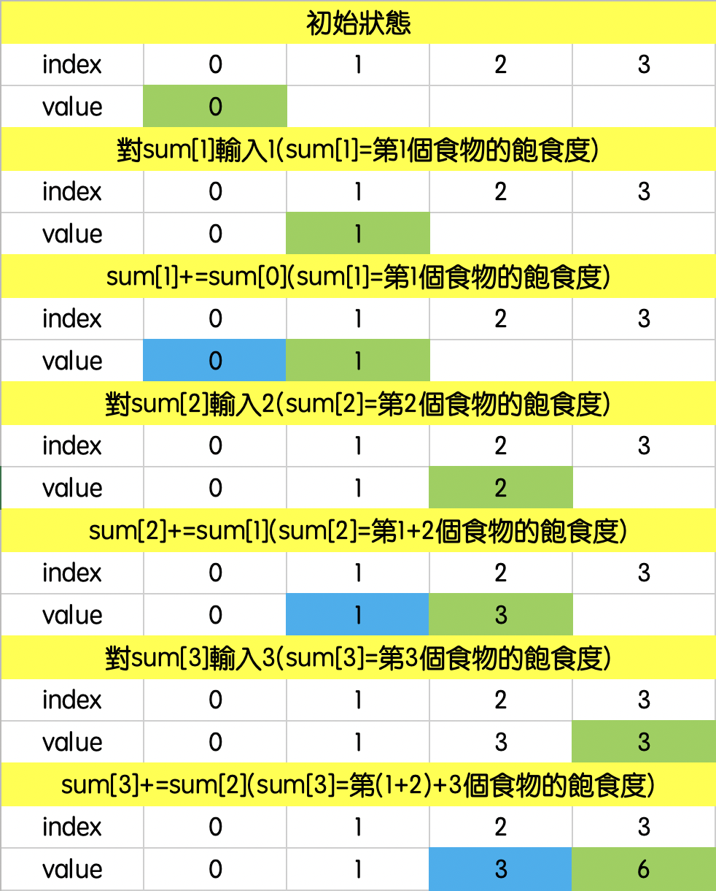

動態規劃
a693. 吞食天地
我們先取得所有食物的飽食度，這時第n個儲存的值代表第n個食物的飽食度，我們用DP的方式讓第n個儲存的值變成第1n個食物的飽食度。l-1的食物。所以飽食度就等於前r個 減掉前l-1個 。

再來就是取範圍，如果我們要從第l個吃到第r個，那代表我們不需要前面1
AC (0.1s, 612KB)
1 |
|
a272. 猥瑣罐頭下樓梯
Fibonacci數列絕對是DP中最經典，也最簡單的例子。這題我本來打算建表，但看到必須算到2^31-1，我就知道這方法絕對行不通。而選擇不建表，萬一遇到輸入的n很大的時候，電腦又得跑迴圈跑到崩潰。不過討論區有人直接發現當Fibonacci數列 mod 10007，這個數列會是20016個為一循環，太神了，這到底是怎麼發現的，這個發現真的是救了我一命。
AC (2ms, 96KB)
1 |
|
封面圖源：AcFun
本部落格所有文章除特別聲明外，均採用 CC BY-NC-SA 4.0 許可協議。轉載請註明來自 Scar's Blog！